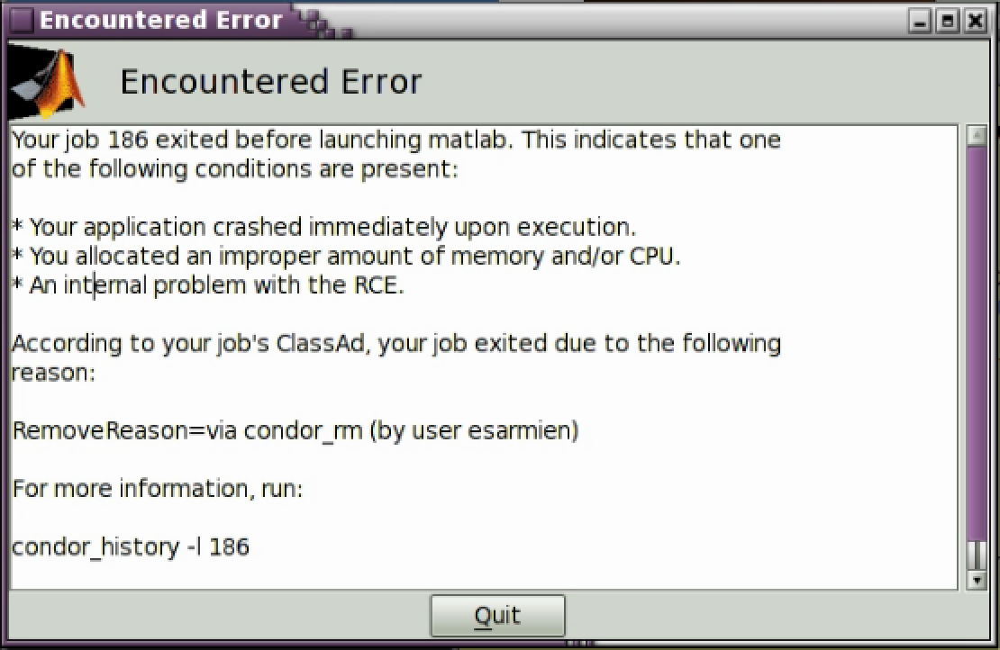
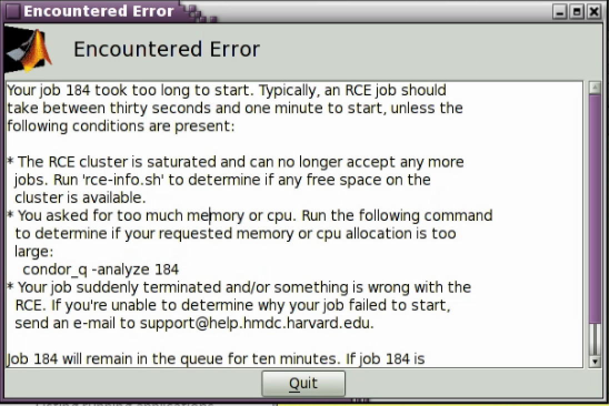

Diagnosing errors and warnings¶
Your job did not start, exited prematurely¶
{kind=link}
This error indicates your job terminated immediately upon start or was
removed from the queue before it was started. The output includes a
RemoveReason which may or may not be populated depending on the
error causing your application to exit prematurely. In this example, I
manually terminated the job before it began to run in order to produce
this error as an example.
Most likely, this error is caused by allocating too few cpus or too little memory to an application, such that upon start it exits.
Your job took too long to start¶
{kind=link}
If you receive an error that your job took too long to start, this means that:
- There are not enough resources in the cluster to start your job
- Your CPU and/or Memory requests are so high that they are unable to be satisfied.
You can check how much resources are available in the cluster by running Applications → RCE Utilities → Show available RCE cluster resources
If there are resources available, try lowering your CPU and memory request and try again. If you absolutely need a large contiguous CPU and memory request, you should try submitting your job as a batch job
Xpra took to long to start¶
If, while submitting your job, you encounter an error stating that Xpra took too long to start, please e-mail rce_services@help.hmdc.harvard.edu, including the entire output of the error message.
Unknown exception¶
If, while submitting your job, you encounter an unknown exception error, please e-mail rce_services@help.hmdc.harvard.edu, including the entire output of the error message.